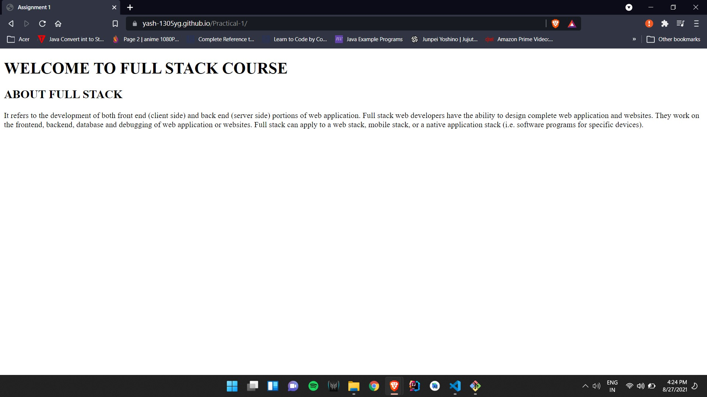

WELCOME TO FULL STACK COURSE
ABOUT FULL STACK
It refers to the development of both front end (client side) and back end (server side) portions of web application.
Full stack web developers have the ability to design complete web application and websites. They work on the frontend,
backend, database and debugging of web application or websites. Full stack can apply to a web stack, mobile stack, or a
native application stack (i.e. software programs for specific devices).
Output
Live page on github
